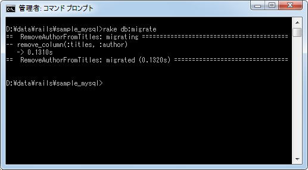

マイグレーションのロールバック
マイグレーションを使ってテーブルに変更などを行なった場合、いつでも任意のバージョンへ戻すことができます。ここではマイグレーションのロールバックを行なう方法について解説します。
ロールバックの実行
マイグレーションスクリプトにはupメソッドとdownメソッドがあり、マイグレーションスクリプトを実行することでupメソッドが呼び出されますが、ロールバックを実行することで現在のバージョンのマイグレーションスクリプトに記述されたdownメソッドが呼び出されて1つ前のバージョンの状態に戻すことができます。
現在、サンプルアプリケーションには3つのマイグレーションスクリプトがあり、全て実行済みで現在のバージョンは一番新しいものになっています。
20120415162250_create_titles.rb テーブルの作成 20120416072618_add_details_to_titles.rb priceカラムとauthorカラムの追加 20120416074444_remove_author_from_titles.rb <-- 現在のバージョン authorカラムの削除
それではロールバックを行ないます。次のように実行します。
rake db:rollback
では実際に実行してみます。
ロールバックを実行すると1つだけロールバックされます。現在のバージョンのdownメソッドが呼び出され、authorカラムが追加されました。
20120415162250_create_titles.rb テーブルの作成 20120416072618_add_details_to_titles.rb <-- 現在のバージョン priceカラムとauthorカラムの追加 20120416074444_remove_author_from_titles.rb authorカラムの削除
念の為、バージョンを確認してみます。
バージョンが「20120416072618」に戻っています。またMySQLに接続してテーブルに作成されているカラムを確認します。
「author」カラムが追加されて1つ前の状態になっています。このようにロールバックを使えばいつでも1つ前の状態に戻すことができます。
ロールバックした後で改めてマイグレーションスクリプトを実行して変更を行なうことももちろん可能です。実際に次のように実行しました。

コマンド実行前のバージョンよりあとのマイグレーションスクリプトが実行され、結果的に「author」カラムが削除されました。
念の為、MySQLに接続してテーブルに作成されているカラムを確認します。
「author」カラムが削除されています。
ステップ数の指定
ロールバックを行なうと1つだけ前のバージョンに戻りますが、ステップパラメータを使用することで指定した回数分ロールバックを行なうことができます。
ステップパラメータを使用する場合の書式は次のとおりです。
rake db:rollback STEP=ステップ数
例えばステップ数に2を指定すれば2つ前の状態に戻ります。
では実際に実行してみます。現在のバージョンは次のとおりです。
20120415162250_create_titles.rb テーブルの作成 20120416072618_add_details_to_titles.rb priceカラムとauthorカラムの追加 20120416074444_remove_author_from_titles.rb <-- 現在のバージョン authorカラムの削除
ロールバックのステップ数に2を指定して2つ前の状態に戻します。次のように実行して下さい。
rake db:rollback STEP=2
まず現在のバージョンのロールバックが行なわれ「author」カラムが追加されています。続けて1つ前のバージョンのロールバックが行なわれ、「price」カラムと「author」カラムが削除されています。現在のバージョンは次のとおりです。
20120415162250_create_titles.rb <-- 現在のバージョン テーブルの作成 20120416072618_add_details_to_titles.rb priceカラムとauthorカラムの追加 20120416074444_remove_author_from_titles.rb authorカラムの削除
念の為、バージョンを確認してみます。
バージョンが「20120415162250」に戻っています。またMySQLに接続してテーブルに作成されているカラムを確認します。
「price」カラムと「author」カラムが削除あれてテーブルを作成した直後の状態になっています。このようにステップ数を指定することで、指定した数だけ順にロールバックを実行することができます。
( Written by Tatsuo Ikura )

著者 / TATSUO IKURA
初心者～中級者の方を対象としたプログラミング方法や開発環境の構築の解説を行うサイトの運営を行っています。